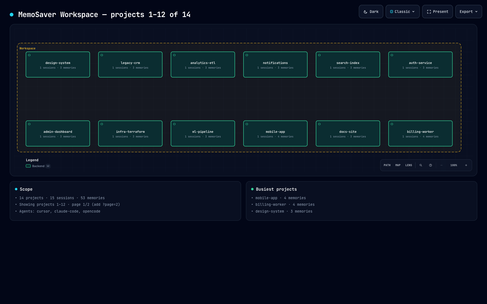
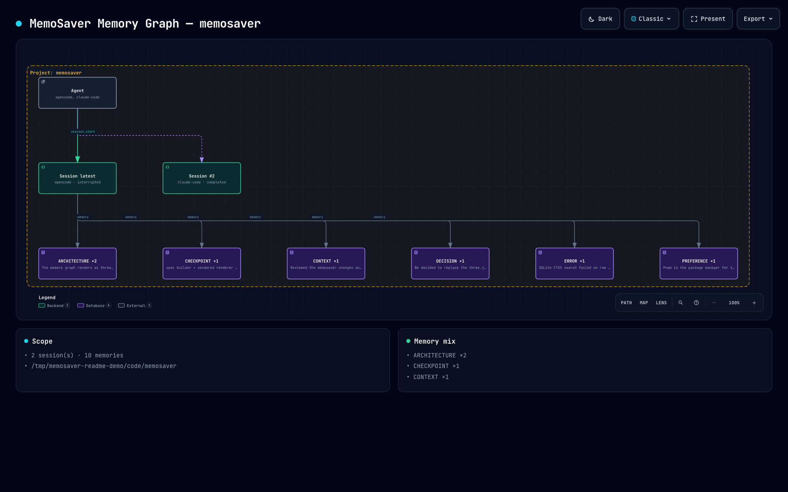
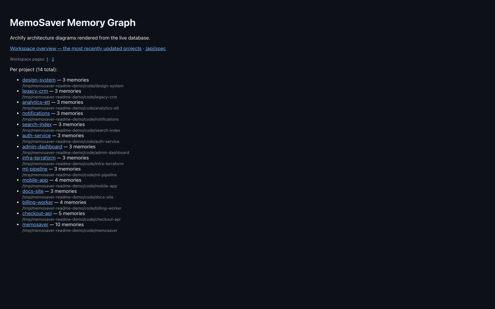

Memory that outlives the session.
MemoSaver is a local-first MCP server. It stores a project's decisions, errors, solutions and progress in SQLite, then hands the next session a resume context instead of a blank slate.
$
agent="claude-code")
LATEST CHECKPOINT
Goal: implement authentication
Completed: auth module with login and register
Pending: logout and refresh-token rotation
Next action: implement logout endpoint15
MCP tools
10
Memory types
1
SQLite file
0
Cloud services required
One session ends. The next one starts where you stopped.
Four stages, in this order, every time you work on a project.
-
1.0
session_start
Point MemoSaver at the project directory. It resolves the path to a deterministic project id, closes any session left interrupted, and returns a resume context when the project already holds state.
-
2.0
Capture
Decisions, errors, solutions, tasks and progress land in SQLite — written explicitly, or extracted automatically:
activity_logbuffers raw events, then the rule-based classifier and the importance scorer keep what matters and drop the chatter. -
3.0
Checkpoint
session_checkpointsnapshots the goal, what finished, what is pending, the blockers and the next action. Ending a session writes one automatically when the session carried state, so the snapshot is never missing. -
4.0
Resume
The next session — tomorrow, or in a different agent — opens with the latest checkpoint, pending tasks, important decisions and recent blockers. The agent continues instead of re-deriving what you already decided.
The memory graph, rendered from your own database.
memosaver visual serves an Archify architecture diagram built from the local SQLite
file: one node per project, then agents, sessions, checkpoints and memory clusters per project.
The three captures below are the real output, not mockups.



Fifteen tools. Two groups.
Every tool returns structured data; failures come back as MCP error results rather than crashing
the agent. project_id wins over project_path; a path MemoSaver has never
seen is a NOT_FOUND, never a silently unscoped query.
| Tool | Arguments | Returns |
|---|---|---|
| session_start | project_path, agent, resume? | project · session · resume context |
| session_checkpoint | session_id, goal?, current_task?, summary?, completed?, pending?, blockers?, next_action?, current_state? | checkpoint |
| session_end | session_id, status?, summary? | session, or { ok: false, error } |
| session_status | session_id?, project_id?, project_path? | one session, a project's sessions, or all |
| session_timeline | session_id | session · checkpoints · memories · events |
| Tool | Arguments | Returns |
|---|---|---|
| memory_insert | project_id | project_path, content, session_id?, type?, importance?, dedupe? | memory, or null when deduped |
| memory_update | memory_id, content?, type?, importance?, metadata? | updated memory |
| memory_delete | memory_id | { deleted: true } |
| memory_recall | project_id | project_path, session_id?, type?, min_importance?, limit? | memories by importance |
| memory_search | query, project_id | project_path?, session_id?, type?, limit? | { memory, score }[] via FTS5 BM25 |
| memory_search_hybrid | same as memory_search | { memory, score, meta }[] re-ranked |
| memory_capture | project_id | project_path, text, session_id?, type? | { captured, ignored, memories } |
| activity_log | project_id | project_path, text, session_id?, type?, flush? | { buffered, pending } |
| memory_export | project_id | project_path?, type? | portable JSON document |
| memory_import | document | { imported, skipped, ids } |
Install, register, verify.
Three commands. Nothing leaves the machine; the database is created at
~/.memosaver/memosaver.db on first run.
git clone https://github.com/akufikri/memosaver.git
cd memosaver
pnpm install
pnpm buildclaude mcp add memosaver --scope user \
-- node /path/to/memosaver/dist/mcp/entry.jsmemosaver doctor # storage, FTS5, config, agent wiring
memosaver status # projects, sessions, memories{
"mcp": {
"memosaver": {
"type": "local",
"enabled": true,
"command": ["node", "/path/to/memosaver/dist/mcp/entry.js"]
}
}
}memosaver install writes these configs for you · any MCP client works over stdio
Questions worth asking
Does any of this leave my machine?
No. Storage is one SQLite file at ~/.memosaver/memosaver.db; there is no cloud
service, no account and no telemetry. The optional LLM extractor stays off unless you set
memory.llm.api_key, and only then do captured events go to the endpoint you name.
Which agents does it work with?
Any MCP client. memosaver install wires Claude Code, OpenCode and Claude Desktop;
the server itself is a plain stdio binary (node dist/mcp/entry.js), so anything
that speaks MCP can register it.
What happens to a session that crashes?
The next session_start marks it interrupted and then builds the resume from the
newest checkpoint — so you see both the interruption and the last recorded state, not an empty
session.
How is search implemented?
SQLite FTS5 with BM25 ranking, plus a hybrid pass that re-ranks by token overlap and
importance. Query text is sanitised before it reaches MATCH, so operator
characters like error: or an unbalanced quote return results instead of an
fts5: syntax error.